Welcome to AIGoalie Football Predictions!
🤖 An Artificial Intelligence (AI) model that predicts the winner of football matches.
🏋 Trained on a lot of football data from many seasons and many leagues.
📚 Continues to learn and improve as more matches are played throughout the season.
🔍 Presents you a different perspective: the most confident to the least confident predictions across all the leagues.
🚨 Gives you additional important information, such as important player injuries.
🎯 Is impressively accurate! Check out previous gameweeks to see how AIGoalie performed so far.
Let AIGoalie help you save time, stay ahead of the game, and make informed decisions, completely free!
| Date | Fixture Bold-faced team is selected by AIGoalie to win. | Odds Pre-match odds of the selected team winning. | Confidence How confident AIGoalie is that the selected team will win. | Result Whether the selected team won, drew, or lost. | Alerts Home 🏥 = Considerable injuries 🏥🏥 = Major injuries 📉 = Dip in form Note, you may see injuries when expanding match but no alert here, meaning the model does not consider them important. |
Alerts Away 🏥 = Considerable injuries 🏥🏥 = Major injuries 📉 = Dip in form Note, you may see injuries when expanding match but no alert here, meaning the model does not consider them important. |
|
|---|---|---|---|---|---|---|---|
| Apr 1 | Inter 8:45 PM Empoli Form: WWD Form: LLL |
2.78 vs -3.53 | 1.22 | 87.75% | None | 🏥 📉 Away team has considerable injuries and a dip in form recently | |
| Mar 29 | Benfica 1:0 Chaves Form: LWW Form: LDL |
2.64 vs -3.36 | 1.14 | 86.42% | 1 | 🏥 📉 Away team has considerable injuries and a dip in form recently | |
| Mar 31 | Livingston 1:00 PM Celtic Form: LDL Form: WLW |
-3.28 vs 2.44 | 1.2 | 84.42% | None | 🏥🏥 📉 Home team has MAJOR injuries and a dip in form recently | |
| Mar 30 | Leverkusen 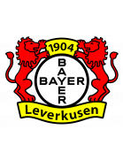 2:1 Hoffenheim Form: WWW Form: WLL |
2.16 vs -2.96 | 1.24 | 81.63% | 1 | 🏥 📉 Away team has considerable injuries and a dip in form recently | |
| Mar 29 | Estrela 1:2 Sp Lisbon Form: LWD Form: WWW |
-2.73 vs 2.03 | 1.27 | 80.29% | 1 | 📉 Home team has a dip in form recently | |
| Mar 30 | Rangers 3:1 Hibernian Form: WWL Form: WDW |
1.92 vs -2.9 | 1.28 | 79.24% | 1 | 🏥🏥 Home team has MAJOR injuries | |
| Apr 1 | Bologna 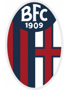 12:30 PM Salernitana Form: WLW Form: DLL |
1.75 vs -2.37 | 1.31 | 77.54% | None | 📉 Away team has a dip in form recently | |
| Mar 31 | Feyenoord 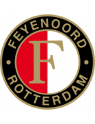 2:30 PM 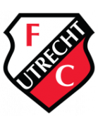 Utrecht Form: DWW Form: LDW |
1.67 vs -2.46 | 1.31 | 76.75% | None | 🏥 📉 Away team has considerable injuries and a dip in form recently | |
| Mar 30 | RB Leipzig 0:0 Mainz Form: WWW Form: DLW |
1.51 vs -2.19 | 1.39 | 75.11% | 0.5 | 📉 Away team has a dip in form recently | |
| Mar 30 | Nijmegen 3:1 PSV Eindhoven Form: WWL Form: DWW |
-2.23 vs 1.49 | 1.44 | 74.9% | 0 | 🏥 Away team has considerable injuries | |
| Mar 30 | Tottenham 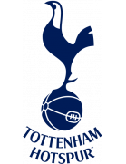 2:1 Luton Form: WWL Form: DLD |
1.34 vs -1.95 | 1.24 | 73.42% | 1 | 📉 Away team has a dip in form recently | |
| Mar 30 | AZ Alkmaar 2:0 Vitesse Form: DWW Form: LLD |
1.3 vs -1.9 | 1.27 | 73.0% | 1 | 📉 Away team has a dip in form recently | |
| Mar 30 | Estoril 1:0 Porto Form: LLW Form: WWW |
-1.88 vs 1.29 | 1.35 | 72.85% | 0 | 📉 Home team has a dip in form recently | |
| Apr 1 | Leeds 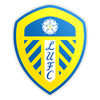 9:00 PM Hull Form: WWW Form: DDD |
1.25 vs -1.88 | 1.62 | 72.45% | None | 📉 Away team has a dip in form recently | |
| Mar 31 | Stuttgart 5:30 PM 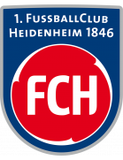 Heidenheim Form: WWW Form: LLD |
1.23 vs -2.43 | 1.3 | 72.29% | None | 🏥 Home team has considerable injuries | 🏥🏥 📉 Away team has MAJOR injuries and a dip in form recently |
| Mar 31 | Liverpool 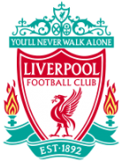 3:00 PM Brighton Form: WWD Form: DLW |
1.21 vs -2.38 | 1.41 | 72.07% | None | 🏥🏥 Home team has MAJOR injuries | 🏥 📉 Away team has considerable injuries and a dip in form recently |
| Mar 30 | Bayern Munich 0:2 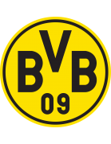 Dortmund Form: DWW Form: WWW |
1.13 vs -2.06 | 1.47 | 71.26% | 0 | 🏥🏥 Away team has MAJOR injuries | |
| Mar 30 | Barcelona 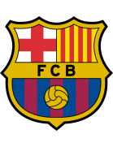 1:0 Las Palmas Form: DWW Form: DLL |
1.13 vs -2.29 | 1.28 | 71.28% | 1 | 🏥🏥 Home team has MAJOR injuries | 🏥 📉 Away team has considerable injuries and a dip in form recently |
| Apr 1 | Lecce 6:00 PM Roma Form: DLW Form: WDW |
-1.92 vs 1.03 | 1.92 | 70.3% | None | 🏥 📉 Home team has considerable injuries and a dip in form recently | 🏥 Away team has considerable injuries |
| Mar 31 | Twente 2:30 PM Heracles Form: WWL Form: DLW |
1.0 vs -1.96 | 1.22 | 70.01% | None | 🏥 Home team has considerable injuries | 🏥 📉 Away team has considerable injuries and a dip in form recently |
| Mar 30 | Hearts 1:1 Kilmarnock Form: DWL Form: LDW |
0.9 vs -1.83 | 2.1 | 65.85% | 0.5 | 📉 Home team has a dip in form recently | 🏥🏥 📉 Away team has MAJOR injuries and a dip in form recently |
| Mar 31 | Real Madrid 9:00 PM Ath Bilbao Form: DWW Form: DWW |
0.89 vs -1.67 | 1.58 | 65.41% | None | 🏥 Home team has considerable injuries | |
| Apr 1 | Portimonense 9:15 PM Sp Braga Form: DLL Form: WDW |
-2.02 vs 0.87 | 1.47 | 64.72% | None | 🏥🏥 📉 Home team has MAJOR injuries and a dip in form recently | 🏥 Away team has considerable injuries |
| Mar 30 | Chelsea 2:2 Burnley Form: DDW Form: LDW |
0.86 vs -2.14 | 1.32 | 64.38% | 0.5 | 🏥🏥 📉 Home team has MAJOR injuries and a dip in form recently | 🏥 📉 Away team has considerable injuries and a dip in form recently |
| Mar 31 | Marseille 8:45 PM Paris SG Form: WWL Form: DDW |
-1.92 vs 0.84 | 2.16 | 63.58% | None | 🏥🏥 Home team has MAJOR injuries | 🏥 📉 Away team has considerable injuries and a dip in form recently |
| Mar 31 | Nice 3:00 PM Nantes Form: LLW Form: LLL |
0.78 vs -1.54 | 1.82 | 61.23% | None | 📉 Home team has a dip in form recently | 🏥 📉 Away team has considerable injuries and a dip in form recently |
| Mar 31 | Augsburg 3:30 PM FC Koln Form: WWW Form: LDL |
0.76 vs -1.72 | 1.82 | 60.59% | None | 🏥🏥 📉 Away team has MAJOR injuries and a dip in form recently | |
| Mar 30 | Brentford 1:1 Man United Form: DLL Form: LLW |
-1.72 vs 0.71 | 2.28 | 58.23% | 0.5 | 🏥🏥 📉 Home team has MAJOR injuries and a dip in form recently | 📉 Away team has a dip in form recently |
| Mar 31 | Girona 4:15 PM Betis Form: LWL Form: LLL |
0.68 vs -1.52 | 1.81 | 57.27% | None | 📉 Home team has a dip in form recently | 🏥 📉 Away team has considerable injuries and a dip in form recently |
| Mar 30 | Go Ahead Eagles 3:0 Excelsior Form: WLL Form: LLD |
0.67 vs -1.81 | 1.6 | 56.69% | 1 | 🏥 📉 Home team has considerable injuries and a dip in form recently | 🏥🏥 📉 Away team has MAJOR injuries and a dip in form recently |
| Mar 31 | Almere City 4:45 PM Volendam Form: DDD Form: LDL |
0.67 vs -1.69 | 1.47 | 56.92% | None | 📉 Home team has a dip in form recently | 🏥🏥 📉 Away team has MAJOR injuries and a dip in form recently |
| Apr 1 | Sunderland 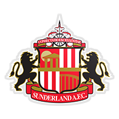 4:00 PM 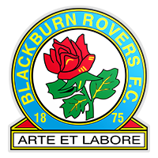 Blackburn Form: LLD Form: DDD |
0.63 vs -1.34 | 3.1 | 55.02% | None | 📉 Home team has a dip in form recently | 📉 Away team has a dip in form recently |
| Apr 1 | Leicester 1:30 PM Norwich Form: LWD Form: LWW |
0.58 vs -1.46 | 1.77 | 53.16% | None | 📉 Home team has a dip in form recently | 🏥 Away team has considerable injuries |
| Mar 30 | Sheffield United 3:3 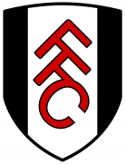 Fulham Form: LLD Form: WLW |
-1.13 vs 0.54 | 1.77 | 51.79% | 0.5 | 📉 Home team has a dip in form recently | |
| Mar 30 | Valencia 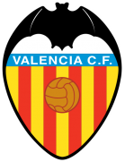 0:0 Mallorca Form: DWL Form: WLW |
0.53 vs -1.19 | 2.16 | 51.09% | 0.5 | 📉 Home team has a dip in form recently | |
| Apr 1 | Coventry 4:00 PM 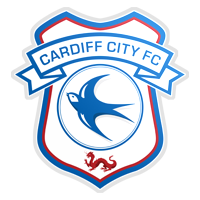 Cardiff Form: LWW Form: WWL |
0.53 vs -1.3 | 2.4 | 51.22% | None | 🏥 Away team has considerable injuries | |
| Mar 30 | Genoa 1:1 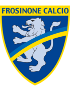 Frosinone Form: LLD Form: DLL |
0.52 vs -1.24 | 2.02 | 50.99% | 0.5 | 📉 Home team has a dip in form recently | 📉 Away team has a dip in form recently |
| Mar 29 | Gent 5:1 Standard Form: LDW Form: WLW |
0.47 vs -1.39 | 1.66 | 47.23% | 1 | 📉 Home team has a dip in form recently | 🏥🏥 Away team has MAJOR injuries |
| Mar 30 | Fiorentina 1:2 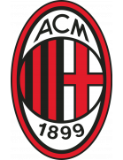 Milan Form: WDD Form: WWW |
-1.33 vs 0.46 | 2.66 | 47.02% | 1 | 📉 Home team has a dip in form recently | 🏥 Away team has considerable injuries |
| Apr 1 | West Brom 4:00 PM Watford Form: DWW Form: DLW |
0.46 vs -1.15 | 2.4 | 46.42% | None | 🏥 Home team has considerable injuries | 📉 Away team has a dip in form recently |
| Mar 31 | Strasbourg 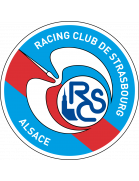 5:05 PM Rennes Form: DLW Form: LDW |
-0.98 vs 0.45 | 2.38 | 46.2% | None | 📉 Home team has a dip in form recently | 📉 Away team has a dip in form recently |
| Mar 31 | Zwolle 12:15 PM Ajax Form: LDL Form: WDD |
-1.84 vs 0.44 | 1.78 | 45.15% | None | 🏥🏥 📉 Home team has MAJOR injuries and a dip in form recently | 🏥🏥 📉 Away team has MAJOR injuries and a dip in form recently |
| Mar 31 | Bochum 7:30 PM Darmstadt Form: LLL Form: LLL |
0.39 vs -1.86 | 1.71 | 41.33% | None | 🏥🏥 📉 Home team has MAJOR injuries and a dip in form recently | 🏥🏥 📉 Away team has MAJOR injuries and a dip in form recently |
| Mar 30 | Metz 2:5 Monaco Form: WWL Form: DWD |
-1.29 vs 0.37 | 1.67 | 39.97% | 1 | 🏥🏥 📉 Away team has MAJOR injuries and a dip in form recently | |
| Mar 30 | Lyon 1:1 Reims Form: LWW Form: LDW |
0.3 vs -1.0 | 2.18 | 33.94% | 0.5 | 📉 Away team has a dip in form recently | |
| Mar 30 | Bournemouth 2:1 Everton Form: WDW Form: DLL |
0.28 vs -1.01 | 2.24 | 32.64% | 1 | 🏥 Home team has considerable injuries | 📉 Away team has a dip in form recently |
| Mar 30 | Guimaraes 1:0 Moreirense Form: WWW Form: DLW |
0.28 vs -1.14 | 1.87 | 32.55% | 1 | 🏥 📉 Away team has considerable injuries and a dip in form recently | |
| Mar 30 | Ein Frankfurt 0:0 Union Berlin Form: WWL Form: LLW |
0.27 vs -1.08 | 2.1 | 31.67% | 0.5 | 🏥 Home team has considerable injuries | 📉 Away team has a dip in form recently |
| Mar 30 | Arouca 2:1 Farense Form: WLL Form: LLD |
0.21 vs -1.41 | 1.81 | 26.74% | 1 | 🏥🏥 📉 Home team has MAJOR injuries and a dip in form recently | 🏥 📉 Away team has considerable injuries and a dip in form recently |
| Apr 1 | Stoke 4:00 PM Huddersfield Form: LWL Form: LLD |
0.21 vs -0.79 | 4.1 | 26.72% | None | 📉 Home team has a dip in form recently | 📉 Away team has a dip in form recently |
| Apr 1 | Ipswich 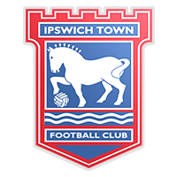 6:30 PM 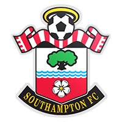 Southampton Form: WLW Form: LWW |
-1.01 vs 0.21 | 1.62 | 27.07% | None | 🏥 Away team has considerable injuries | |
| Mar 30 | Werder Bremen 0:2 Wolfsburg Form: LLL Form: LLL |
0.19 vs -1.22 | 2.82 | 25.02% | 0 | 🏥🏥 📉 Home team has MAJOR injuries and a dip in form recently | 🏥 📉 Away team has considerable injuries and a dip in form recently |
| Mar 30 | Getafe 0:1 Sevilla Form: DLW Form: WDL |
0.18 vs -1.05 | 2.66 | 24.62% | 0 | 🏥 📉 Home team has considerable injuries and a dip in form recently | 📉 Away team has a dip in form recently |
| Mar 31 | Celta 2:00 PM Vallecano Form: WLW Form: DLW |
0.18 vs -0.89 | 2.06 | 24.48% | None | 🏥 Home team has considerable injuries | 📉 Away team has a dip in form recently |
| Mar 30 | Almeria 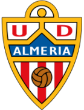 0:3 Osasuna Form: LDW Form: WLL |
-0.97 vs 0.12 | 2.9 | 19.98% | 1 | 📉 Home team has a dip in form recently | 🏥🏥 📉 Away team has MAJOR injuries and a dip in form recently |
| Mar 30 | Anderlecht 1:0 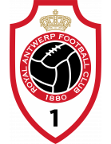 Antwerp Form: WWL Form: WWD |
0.12 vs -0.92 | 2.28 | 19.59% | 1 | 🏥 Home team has considerable injuries | |
| Mar 30 | Aston Villa 2:0 Wolves Form: WLD Form: WLW |
0.11 vs -1.14 | 1.68 | 18.75% | 1 | 🏥 📉 Home team has considerable injuries and a dip in form recently | 🏥 Away team has considerable injuries |
| Mar 30 | Oud-Heverlee Leuven 2:3 Mechelen Form: LLW Form: WWL |
-1.05 vs 0.1 | 2.5 | 17.74% | 1 | 🏥 📉 Home team has considerable injuries and a dip in form recently | 🏥 Away team has considerable injuries |
| Apr 1 | Rotherham 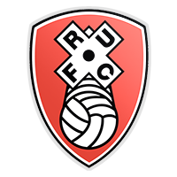 4:00 PM Millwall Form: LLD Form: DWL |
-1.33 vs 0.09 | 3.55 | 17.0% | None | 🏥🏥 📉 Home team has MAJOR injuries and a dip in form recently | 🏥🏥 📉 Away team has MAJOR injuries and a dip in form recently |
| Apr 1 | Cercle Brugge 1:30 PM Club Brugge Form: LDW Form: WWL |
-1.14 vs 0.04 | 2.0 | 13.3% | None | 🏥🏥 📉 Home team has MAJOR injuries and a dip in form recently | 🏥 Away team has considerable injuries |
| Mar 30 | Waalwijk 1:1 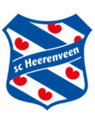 Heerenveen Form: LWD Form: WLL |
-0.71 vs 0.01 | 2.44 | 10.71% | 0.5 | 📉 Home team has a dip in form recently | 📉 Away team has a dip in form recently |
| Mar 29 | Gil Vicente 1:2 Famalicao Form: DDL Form: DLD |
0.01 vs -0.7 | 2.46 | 10.89% | 0 | 📉 Home team has a dip in form recently | 📉 Away team has a dip in form recently |
| Mar 30 | Aberdeen 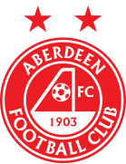 2:1 Ross County Form: LLW Form: LDW |
0.01 vs -0.64 | 1.79 | 10.61% | 1 | 📉 Home team has a dip in form recently | 📉 Away team has a dip in form recently |
| Mar 31 | St Truiden 6:30 PM Westerlo Form: LLW Form: LLD |
-0.01 vs -0.71 | 2.24 | 9.86% | None | 📉 Home team has a dip in form recently | 🏥 📉 Away team has considerable injuries and a dip in form recently |
| Apr 1 | Birmingham 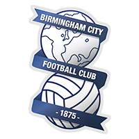 4:00 PM Preston Form: LLL Form: DLW |
-0.62 vs -0.02 | 1.57 | 9.65% | None | 📉 Home team has a dip in form recently | 📉 Away team has a dip in form recently |
| Mar 31 | Alaves 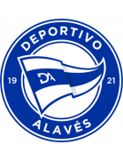 6:30 PM Sociedad Form: LWL Form: LWW |
-0.65 vs -0.05 | 2.46 | 8.94% | None | 📉 Home team has a dip in form recently | 🏥 Away team has considerable injuries |
| Mar 30 | Boavista 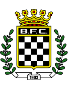 0:0 Rio Ave Form: DWL Form: DDD |
-0.06 vs -0.49 | 2.76 | 8.83% | 0.5 | 📉 Home team has a dip in form recently | 📉 Away team has a dip in form recently |
| Apr 1 | Cagliari 3:00 PM Verona Form: WWL Form: WWL |
-0.07 vs -1.07 | 2.26 | 8.58% | None | 🏥🏥 Home team has MAJOR injuries | 🏥 Away team has considerable injuries |
| Apr 1 | Swansea 4:00 PM QPR Form: DLW Form: DLD |
-0.12 vs -0.66 | 2.96 | 7.62% | None | 🏥 📉 Home team has considerable injuries and a dip in form recently | 📉 Away team has a dip in form recently |
| Mar 29 | Cadiz 1:0 Granada Form: DWL Form: LLL |
-0.13 vs -0.51 | 2.18 | 7.41% | 1 | 📉 Home team has a dip in form recently | 📉 Away team has a dip in form recently |
| Apr 1 | Villarreal 9:00 PM Ath Madrid Form: WWW Form: WLL |
-0.79 vs -0.17 | 2.26 | 6.5% | None | 🏥 Home team has considerable injuries | 🏥 📉 Away team has considerable injuries and a dip in form recently |
| Mar 30 | Nott'm Forest 1:1 Crystal Palace Form: LLD Form: WLD |
-0.19 vs -1.01 | 2.34 | 6.13% | 0.5 | 🏥 📉 Home team has considerable injuries and a dip in form recently | 🏥🏥 📉 Away team has MAJOR injuries and a dip in form recently |
| Mar 30 | Torino 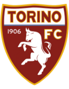 1:0 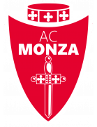 Monza Form: DDW Form: LWW |
-0.2 vs -0.87 | 1.9 | 6.0% | 1 | 🏥🏥 📉 Home team has MAJOR injuries and a dip in form recently | 🏥 Away team has considerable injuries |
| Mar 31 | Le Havre 3:00 PM Montpellier Form: LWL Form: DWL |
-0.2 vs -0.53 | 2.72 | 5.91% | None | 📉 Home team has a dip in form recently | 🏥 📉 Away team has considerable injuries and a dip in form recently |
| Apr 1 | Middlesbrough 4:00 PM Sheffield Weds Form: WWD Form: WLL |
-0.21 vs -0.56 | 5.7 | 5.71% | None | 📉 Away team has a dip in form recently | |
| Mar 31 | Man City 5:30 PM 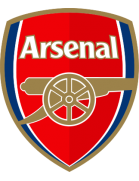 Arsenal Form: WWD Form: WWW |
-0.22 vs -0.71 | 1.96 | 5.57% | None | 🏥🏥 Away team has MAJOR injuries | |
| Mar 31 | Vizela 7:00 PM Casa Pia Form: DWL Form: DLL |
-0.4 vs -0.22 | 3.3 | 5.53% | None | 📉 Home team has a dip in form recently | 📉 Away team has a dip in form recently |
| Mar 30 | Lazio 1:0 Juventus Form: LLW Form: LDD |
-0.79 vs -0.27 | 2.64 | 4.64% | 0 | 🏥 📉 Home team has considerable injuries and a dip in form recently | 🏥 📉 Away team has considerable injuries and a dip in form recently |
| Mar 29 | Lille 2:1 Lens Form: WDD Form: WWL |
-0.47 vs -0.29 | 3.7 | 4.21% | 0 | 🏥 📉 Home team has considerable injuries and a dip in form recently | |
| Mar 30 | M'gladbach 0:3 Freiburg Form: DDD Form: DWL |
-0.32 vs -0.66 | 2.38 | 3.62% | 0 | 🏥 📉 Home team has considerable injuries and a dip in form recently | 🏥 📉 Away team has considerable injuries and a dip in form recently |
| Apr 1 | Sassuolo 3:00 PM Udinese Form: LWL Form: DWL |
-0.35 vs -0.36 | 2.94 | 2.95% | None | 🏥 📉 Home team has considerable injuries and a dip in form recently | 📉 Away team has a dip in form recently |
| Mar 31 | Clermont 3:00 PM Toulouse Form: LLW Form: WLL |
-0.49 vs -0.35 | 2.38 | 3.05% | None | 📉 Home team has a dip in form recently | 🏥 📉 Away team has considerable injuries and a dip in form recently |
| Apr 1 | Plymouth 4:00 PM Bristol City Form: LDL Form: LWL |
-0.6 vs -0.37 | 5.3 | 2.65% | None | 🏥🏥 📉 Home team has MAJOR injuries and a dip in form recently | 📉 Away team has a dip in form recently |
| Apr 1 | Genk 6:30 PM St. Gilloise Form: LWD Form: WDD |
-0.41 vs -0.57 | 2.48 | 1.72% | None | 📉 Home team has a dip in form recently | 🏥🏥 📉 Away team has MAJOR injuries and a dip in form recently |
| Mar 30 | St Johnstone 1:2 Dundee Form: WDL Form: LDW |
-0.67 vs -0.44 | 2.66 | 1.29% | 1 | 🏥🏥 📉 Home team has MAJOR injuries and a dip in form recently | 🏥 📉 Away team has considerable injuries and a dip in form recently |
| Mar 30 | Sparta Rotterdam 4:0 For Sittard Form: DLD Form: WDW |
-0.5 vs -0.45 | 3.3 | 0.97% | 0 | 🏥 📉 Home team has considerable injuries and a dip in form recently | 🏥 Away team has considerable injuries |
| Mar 30 | Napoli 0:3 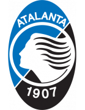 Atalanta Form: WDD Form: LLD |
-0.52 vs -0.48 | 3.55 | 0.45% | 1 | 🏥🏥 📉 Home team has MAJOR injuries and a dip in form recently | 📉 Away team has a dip in form recently |
| Mar 31 | Lorient 1:00 PM Brest Form: WLD Form: WLD |
-0.72 vs -0.5 | 2.04 | 0.02% | None | 📉 Home team has a dip in form recently | 🏥🏥 📉 Away team has MAJOR injuries and a dip in form recently |
| Mar 30 | Motherwell 1:1 St Mirren Form: WWL Form: DWL |
-0.53 vs -0.51 | 2.8 | 0% | 0.5 | 🏥🏥 📉 Away team has MAJOR injuries and a dip in form recently | |
| Mar 30 | Newcastle 4:3 West Ham Form: LWL Form: WDD |
-0.63 vs -0.63 | 4.0 | 0% | 0 | 🏥🏥 📉 Home team has MAJOR injuries and a dip in form recently | 📉 Away team has a dip in form recently |